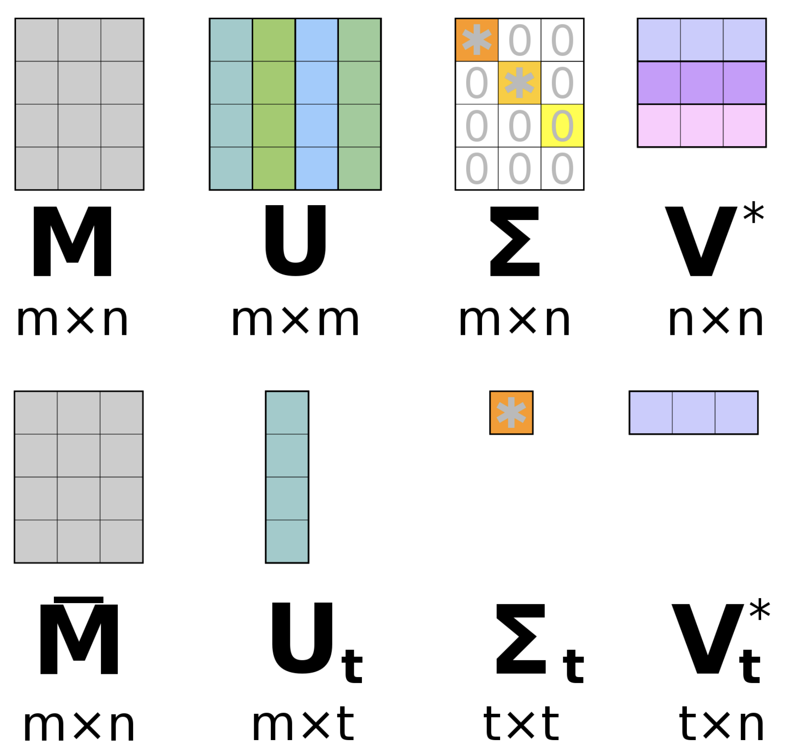

3 Linear Algebra
This section is meant to give an intuitive understanding of the underlying mechanisms of many algorithms. It is mainly a summary of the course from 3Blue1Brown and deepai.org.
For details on the calculations see wikipedia.org.
3.1 Vectors
There are two relevant perspectives for us:
Mathematical: Generally quantities that cannot be expressed by single number. They are objects in a vector space. Such objects can also be e.g. functions.
Programmatical / Data: Vectors are ordered lists of numbers. You model each sample as such an ordered list of numbers and the numbers represent the feature-value of that feature.
Your vectors are organized in a coordinate system and commonly rooted in the origin (point [0,0].
Linear combinations
You create linear combinations of vectors by adding their components (entries in a coordinate). Th All points that you can reach by linear combinations are called the span of these vectors. If a vector lies in the span of another vector, they are linearly dependent.
You can scale (stretch or squish) vectors multiply vectors by scalars (i.e. numbers). A vector with length 1 is called unit vector. The unit vectors in each direction of the coordinate system are its basis vectors. The basis vectors stacked together form an identity matrix: a matrix with 1s on its diagonal. Since there are only values on its diagonal it is also a diagonal matrix.
I = \begin{bmatrix} 1 \quad 0 \quad 0 \\ 0 \quad 1 \quad 0 \\ 0 \quad 0 \quad 1 \end{bmatrix}
Linear transformations
Linear transformations are functions that move points around in a vector space, while preserving the linear relationships between the points (straight lines stay straight, the origin stays the origin). They include rotations and reflections. You can understand the calculation of the linear transformation of a point as follows: You give the basis vectors a new location. You scale the new location basis vectors with the components of the respective dimension of the vector you want to transform. You take the linear combination of the scaled, transformed basis vectors:
\begin{bmatrix} a \quad b \\ c \quad d \end{bmatrix} \begin{bmatrix} x \\ y \end{bmatrix} = x \begin{bmatrix} a \\ c \end{bmatrix} + y \begin{bmatrix} b \\ d \end{bmatrix} = \begin{bmatrix} x a + y b \\ x c + y d \end{bmatrix}
likewise, you can view matrix vector multiplication as a transformation of your space. Full explanation: youtube.com - 3Blue1Brown Multiplying two matrices represents the sequential combination of two linear transformations in your vector space.
A transpose A^T of a matrix A is achieved by mirroring the matrix on its diagonal and therefore swapping its rows and columns. This commonly makes sense when evaluating if elements of two matrices line up in regard to their scale. You can also check if matrices are orthogonal.
An orthogonal/orthonormal matrix is a matrix for which holds A^TA=AA^T=I, where I is the identity matrix. The columns of orthogonal matrices are linearly independent of each other.
An inverse matrix A^{-1} of a matrix A is the matrix that would yield no transformation at all, if multiplied with A.
The dot product of two vectors is calculated like a linear transformation between a 1 \times 2 matrix and a 2 \times 1 matrix. It therefor maps onto the 1-D Space and can be used as a measure of collinearity.
The cross product of two vectors is a perpendicular vector that describes the parallelogram that the two vectors span. Its magnitude can be seen as the area of the parallelogram. Beware: The order of the vectors in the operation matters. The cross product can be expressed by a determinant. If two vectors are collinear or perpendicular, the cross product is zero.
Determinants, rank and column space
Determinants can be used to measure how much a linear transformation compresses or stretches the space. If a transformation inverts the space, the determinant will be negative. If a determinant is 0 it means that the transformation maps the space onto a lower dimension.
\det \left( \begin{bmatrix} a \quad b \\ c \quad d \end{bmatrix} \right) = (a*d)-(c*b)
The dimensions that come out of a transformation/matrix are its rank. All possible outputs of your matrix (the span constructed by its columns) is the column space. All vectors that are mapped to 0 (onto the origin) are the null space or kernel of the matrix.
Determinants can only be calculated for square matrices. An e.g. 3 \times 2 matrix can be viewed as a transformation mapping from 2-D to 3-D space.
System of equations
Linear algebra can help you solve systems of equations.
\begin{array}{ll} 1x+2y+3z=4 \\ 4x+5y+6z=-7 \\8x + 9y +0z = 1 \end{array} \quad \rightarrow \quad \begin{bmatrix} 1 \quad 2 \quad 3 \\ 4 \quad 5 \quad 6 \\ 8 \quad \ 9 \quad 0 \end{bmatrix} \begin{bmatrix} x \\ y \\ z\end{bmatrix} = \begin{bmatrix} 4 \\ -7 \\ 1 \end{bmatrix} \quad \rightarrow \quad A \vec{x} = \vec{v}
You can imagine this as as searching a vector \vec{x} that will land on \vec{v} after the transformation A.
To find \vec{x} you need the inverse of A:
A^{-1}A = \begin{bmatrix} 1 \quad 0 \\ 0 \quad 1 \end{bmatrix}
You now multiply the matrix equation with A^{-1} and get:
A^{-1} A \vec{x} = A^{-1} \vec{v} \quad \rightarrow \quad \vec{x} = A^{-1} \vec{v}
Eigenvalues and Eigenvectors
For a linear transformation A, the eigenvectors \vec{v} represent the vectors that stay on their span (keep orientation) and the eigenvalues \lambda are the scalars by which the eigenvectors get scaled.
A \vec{v} = \lambda \vec{v}
Transforming \lambda to a scaled identity matrix I and factoring out \vec{v}, we get: (A - \lambda I) \vec{v} = \vec{0} This tells us, that the transformation (A - \lambda I) needs to map the vector \vec{v} onto a lower dimension.
An eigenbasis \lambda I is a basis where the basis vectors are eigenvectors. They will sit on the diagonal of your basis matrix (\rightarrow it will be a diagonal matrix).
Eigenvalue decomposition
An eigen(value)decomposition is the decomposition of a matrix into the matrix of eigenvalues and eigenvectors.
AU = U \Lambda \quad \rightarrow \quad A = U \Lambda U^{-1}
where U is the matrix of the eigenvectors of A and \Lambda is the eigenbasis. Thus matrix operations can be computed more easily, since \Lambda is a diagonal matrix.
Singular value decomposition
Singular Value decomposition is also applicable to a non-square m \times n-matrix (with m rows and n columns). If you have a matrix with rank r, you can decompose it into
A = U \Sigma V^T
where U is an orthogonal m \times r matrix, \Sigma is a diagonal r \times r matrix and V^T is an orthogonal r \times n matrix. U contains the left singular vectors, V the right singular vectors and \Sigma the Singular Values.
This decomposition technique can be used to approximate the original matrix A with only the k largest singular values. This lets you work in a space with only k dimensions given by U_k \Sigma_k. Thereby you can save computation time and memory space without loosing a lot of information.

{kind=link}
For more detailed explanation, see this Stack Exchange Thread.
For applications, please see SVD for lower dimensional mapping.